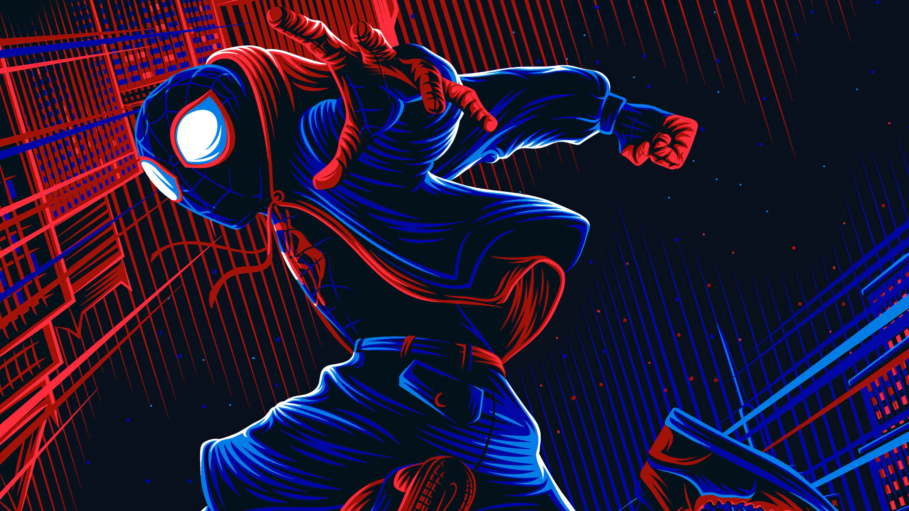
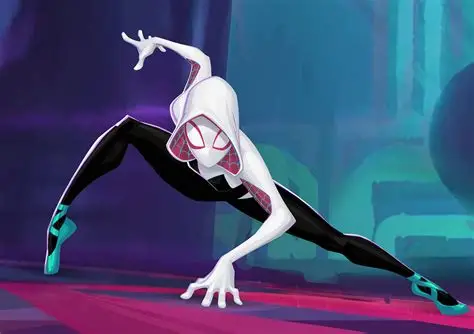
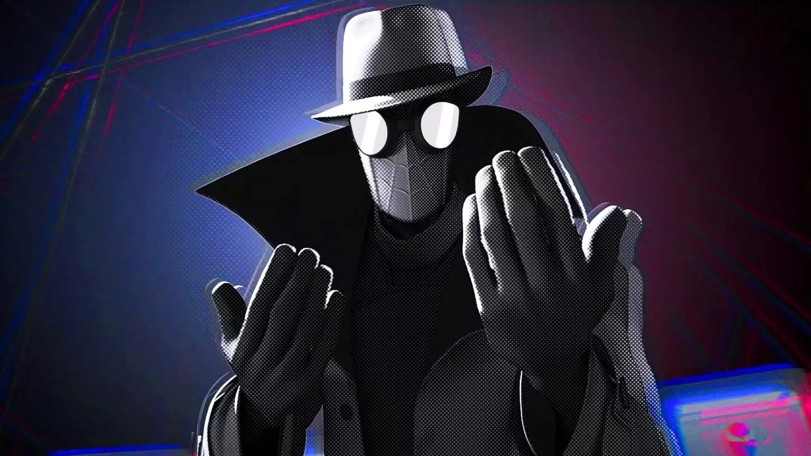
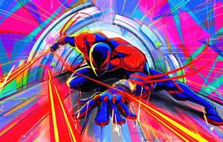

A inspiração veio de:
- insetos (principalmente aranhas)
- ideia de alguém que escala paredes
- jovem nerd que ganha poderes de forma inesperada
O personagem principal, Peter Parker, é um estudante que:
é picado por uma aranha radioativa
ganha poderes como força, agilidade e “sentido aranha”
começa a usar esses poderes como herói
Mas o ponto mais importante da origem é a famosa lição:
“Com grandes poderes vêm grandes responsabilidades.”
outras versões do nosso amigo da vizinhança
Um dos mais populares hoje: MILES MORALES

Jovem também, mas de outra realidade
Tem poderes extras: camuflagem invisível e choque elétrico (venom blast)
Ficou famoso com o filme Spider-Man: Into the Spider-Verse
Gwen Stacy

Aqui a história muda:
Quem vira heroína é a Gwen, não o Peter
O Peter dessa realidade tem um destino bem diferente
Visual icônico com capuz branco
Spider-Man Noir

Se passa nos anos 1930 Clima sombrio, estilo detetiver Bem mais sério e violento que o tradicional.
inclusive uma série está em desenvolvimento onde nicolas cage será o spider Noir

Miguel O'Hara é o Spider-Man 2099, o Homem-Aranha do futuro da Marvel, criado por Peter David e Rick Leonardi em 1992. Ambientado em 2099, ele é geneticista da Alchemax que ganha poderes aracnídeos após um experimento sabotado. Dentre seus poderes estão força, velocidade, reflexos, aderência a paredes e teias orgânicas produzidas pelo próprio corpo, com um traje biotecnológico vermelho e azul. Sua missão é combater o crime e a corrupção corporativa, consolidando-se como uma das encarnações icônicas do Spider-Man no multiverso.
Todo Homem-Aranha passa por Eventos Canônicos, sendo o principal a perda de um mentor ou ente querido (como o Tio Ben). Esse sacrifício gera a lição sobre responsabilidade e é o que define o herói em qualquer realidade. Impedir esse fato pode causar o colapso de todo o seu universo.
"com grander poderes, vem grandes responsabilidades"